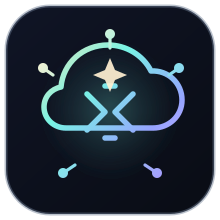
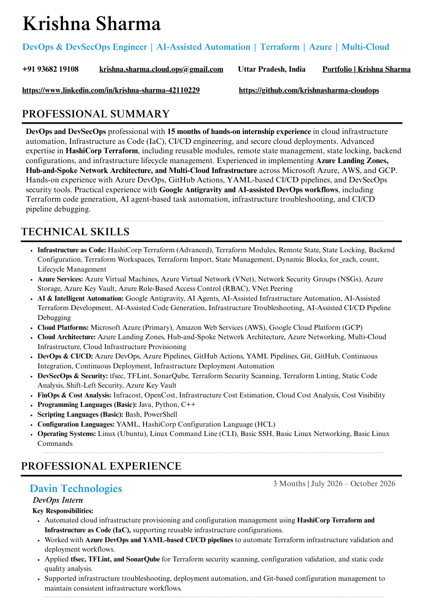

01 / PRIMARY DISCIPLINE
Infrastructure as Code
Advanced Terraform including modules, state locking, remote backends, workspaces, dynamic blocks, import and lifecycle management.

DEVOPS / DEVSECOPS / INTELLIGENT AUTOMATION
A premium GitHub Pages experience for cloud engineering, Terraform automation, DevSecOps delivery and AI-assisted workflows.
Step into the portfolio of Krishna Sharma.
Hello, I'm Krishna Sharma. I craft premium cloud engineering experiences through Terraform, secure delivery pipelines, resilient Azure architecture and practical AI-assisted DevOps workflows.
I build cloud foundations that are reproducible, reviewable and secure by design.
I'm Krishna Sharma, a DevOps & DevSecOps professional with 15 months of hands-on internship experience. My strongest area is advanced Terraform—reusable modules, remote state, state locking, backends, workspaces and infrastructure lifecycle management.
I work primarily in Microsoft Azure, with experience across AWS and GCP. I use Azure DevOps, GitHub Actions, security tooling and AI-assisted workflows to help move infrastructure changes from idea to deployment.
PROOF OF PRACTICE
Explore the decisions, tooling and engineering patterns behind my infrastructure projects. Select a card for its case study.
UNDER THE HOOD
Explore three simplified architecture patterns based on the tools and work described in my resume. These diagrams explain patterns—not production topology screenshots.
AUTOMATION IN PRACTICE
Explore the kind of Terraform and security checks I work with. This is an interactive educational simulation, not a live command execution environment.
WHAT I WORK WITH
Tooling selected around reusable infrastructure, delivery automation, cloud security and practical AI support.
Advanced Terraform including modules, state locking, remote backends, workspaces, dynamic blocks, import and lifecycle management.
Landing Zones, hub-and-spoke networking, Azure VNet, NSGs, RBAC, Key Vault, storage and virtual machines.
Infrastructure provisioning with Terraform across Microsoft Azure, Amazon Web Services and Google Cloud Platform.
Azure DevOps YAML pipelines, Azure Pipelines, GitHub Actions, Git-based workflows and Terraform validation.
tfsec, TFLint, SonarQube, Azure Key Vault, Infracost and OpenCost for secure, cost-aware infrastructure.
Google Antigravity and AI agents to assist IaC code generation, troubleshooting and CI/CD pipeline debugging, with human review.
THE JOURNEY
Two hands-on internships covering cloud provisioning, DevSecOps, automation and AI-assisted infrastructure engineering.
Automated Terraform-based infrastructure provisioning; worked with Azure DevOps YAML CI/CD pipelines; applied tfsec, TFLint and SonarQube for security and code quality checks; supported troubleshooting and Git workflows.
Provisioned infrastructure across Azure, AWS and GCP with Terraform; developed reusable modules and remote state configurations; implemented Azure Landing Zones and hub-and-spoke architecture; worked with CI/CD, DevSecOps scanners, Infracost, OpenCost and AI-assisted workflows.
THE DETAILS, DOCUMENTED
A two-page snapshot of my skills, professional internships, technical projects and education. Browse both pages or open the original PDF.
The original PDF retains its printed LinkedIn URL. The website contact links use your updated address.

OPEN TO DEVOPS & CLOUD OPPORTUNITIES
Interested in Terraform, Azure infrastructure, DevSecOps or AI-assisted automation? Let's connect.
Start a conversation ↗